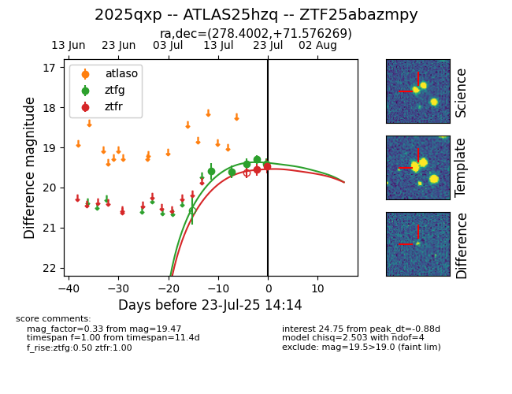

Target ZTF25abazmpy at 2025-07-23 11:52, see:
FINK: fink-portal.org/ZTF25abazmpy
Lasair: lasair-ztf.lsst.ac.uk/objects/ZTF25abazmpy
ALeRCE: alerce.online/object/ZTF25abazmpy
TNS: wis-tns.org/object/2025qxp
YSE: ziggy.ucolick.org/yse/transient_detail/2025qxp
alt names
ZTF25abazmpy (ztf,fink)
2025qxp (tns,yse)
ATLAS25hzq (atlas)
coordinates:
equatorial (ra, dec) = (278.4002,+71.57627)
galactic (l, b) = (102.2164,+27.03158)
photometry
last ztfg=19.30, ztfr=19.55
4 ztfg, 1 ztfr detections
